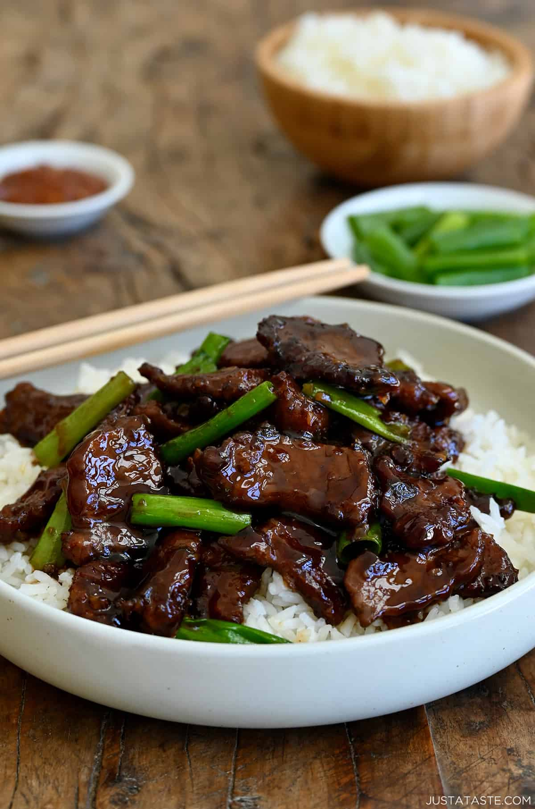
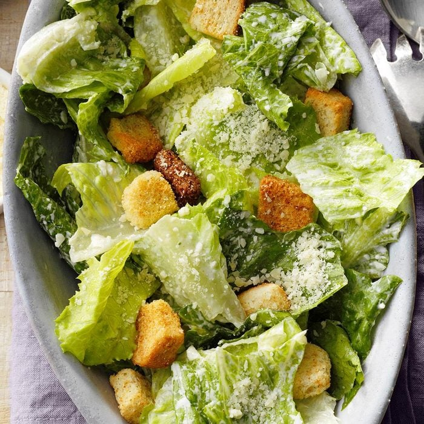
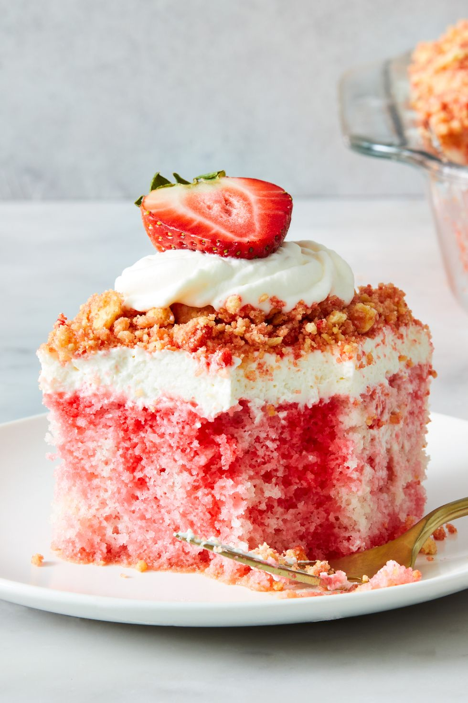

Ruben's Dinner for Tonight
Appetizer: Meatballs in Marinara Sauce

Preheat the oven to 425°F and line a large rimmed baking sheet with parchment paper.
Combine panko and milk in a small bowl, letting it stand until absorbed (about 5 minutes).
Gently mix the breadcrumb mixture, chuck, veal, sausage, cheese, parsley, garlic powder, salt, pepper, nutmeg, and eggs in a large bowl, being careful not to overmix.
Shape the mixture into forty 1 1/2-inch balls using a small cookie scoop and place them on the prepared baking sheet.
Bake the meatballs for about 20 minutes until cooked through.
Meanwhile, heat marinara sauce in a large Dutch oven over medium heat.
Remove the meatballs from the baking sheet and add them to the simmering sauce.
Main Course: Mongolian Beef
Prepare the sauce: Heat vegetable oil in a small saucepan, sauté garlic and ginger until golden. Add soy sauce, water, and brown sugar. Bring to a boil for 3 minutes. Remove from heat and set aside.
Prepare the flank steak: Slice flank steak against the grain into 1/4-inch pieces. Toss with cornstarch and shake off excess. Allow to sit for 10 minutes.
Cook the steak: Heat vegetable oil in a large skillet or wok. Add steak and sauté until seared but barely cooked in the center. Remove steak and drain excess oil.
Finish the dish: Return skillet to heat. Add prepared sauce, then add reserved steak. Cook at a boil, stirring constantly, until sauce thickens (3-5 minutes). Add sliced scallions and stir to combine.
Serve: Serve over steamed rice, noodles, or with vegetables. Enjoy a restaurant-quality dish with minimal prep time!
Soup:
White Bean and Ham Soup
Cook onions, carrots, garlic, and thyme in butter until softened.
In a large soup pot, melt butter. Add onion, carrot, garlic, thyme, and coriander. Cook until softened (about 3 minutes).
Add stock, beans, and ham to the pot. Bring to a boil, cover partially, and cook over moderate heat for 20 minutes.
Toss baguette cubes with olive oil and paprika. Toast on a baking sheet in a preheated oven at 350°F for about 10 minutes.
Remove ham from the soup, cut into 1/2-inch pieces, and discard thyme sprigs.
Transfer soup to a blender or food processor and puree until smooth. Return soup to the pot, stir in diced ham, and season with salt and pepper.
Ladle into warmed shallow bowls and top with croutons and sliced scallion before serving.
Salad: Romaine Caesar Salad
In a small bowl, whisk the first 7 ingredients.
Place romaine in a large bowl. Drizzle with dressing and toss to coat.
Serve with salad croutons and additional cheese if desired.
Dessert: Strawberry Crunch Poke Cake
Bake
Preheat oven to 350°F. Grease a 13"x9" baking pan. Prepare cake according to package directions.
Pour batter into prepared pan. Bake until a tester inserted into the center comes out clean, 20 to 25 minutes. Let cool.
Poke holes all over the cake with a bamboo skewer, spacing 1/2" to 1" apart.
In a saucepan, bring 1/2 cup water to a boil. Add Jell-O powder; whisk until dissolved. Remove from heat and whisk in 1/2 cup cold water. Pour gelatin mixture over holes on cake. Cover and refrigerate at least 2 hours or up to overnight.
Frosting
In a bowl, beat cream until stiff peaks form. In another bowl, beat cream cheese until smooth and fluffy. Add confectioners' sugar, vanilla, and salt. Fold in whipped cream. Spread frosting over cake.
Topping
In a food processor, pulse cookies. Transfer to a bowl, pour butter over crumbs, sprinkle with Jell-O powder, and stir to combine. Sprinkle crumb mixture over frosting and press down lightly. Dollop reserved frosting over crumbs and top with strawberries.